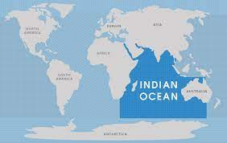

The Atlantic Ocean is the second-largest of the world's five oceans, with an area of about 85,133,000 km2 (32,870,000 sq mi). [2] It covers approximately 17% of Earth's surface and about 24% of its water surface area. During the Age of Discovery, it was known for separating the Old World of Africa, Europe, and Asia from the New World of the Americas.
Through its separation of Europe, Africa, and Asia from the Americas, the Atlantic Ocean has played a central role in the development of human society, globalization, and the histories of many nations. While the Norse were the first known humans to cross the Atlantic, it was the expedition of Christopher Columbus in 1492 that proved to be the most consequential. Columbus' expedition ushered in an age of exploration and colonization of the Americas by European powers, most notably Portugal, Spain, France, and the United Kingdom. From the 16th to 19th centuries, the Atlantic Ocean was the center of both an eponymous slave trade and the Columbian exchange while occasionally hosting naval battles. Such naval battles, as well as growing trade from regional American powers like the United States and Brazil, both increased in degree during the early 20th century, and while no major military conflicts took place in the Atlantic in the present day, the ocean remains a core component of trade around the world.
The Atlantic Ocean occupies an elongated, S-shaped basin extending longitudinally between Europe and Africa to the east, and the Americas to the west. As one component of the interconnected World Ocean, it is connected in the north to the Arctic Ocean, to the Pacific Ocean in the southwest, the Indian Ocean in the southeast, and the Southern Ocean in the south. Other definitions describe the Atlantic as extending southward to Antarctica. The Atlantic Ocean is divided in two parts, the northern and southern Atlantic, by the Equator.[5]
The Pasific Ocean
An map of Pasific Ocean
The Pacific Ocean is the largest and deepest of Earth's five oceanic divisions. extends from the Arctic Ocean in the north to the Southern Ocean (or, depending on definition, to Antarctica) in the south, and is bounded by the continents of Asia and Oceania in the west and the Americas in the east.
At 165,250,000 square kilometers (63,800,000 square miles) in area (as defined with a southern Antarctic border), this largest division of the World Ocean and the hydrosphere covers about 46% of Earth's water surface and about 32% of the planet's total surface area, larger than its entire land area (148,000,000 km2 (57,000,000 sq mi)).[1] The centers of both the Water Hemisphere and the Western Hemisphere, as well as the oceanic pole of inaccessibility, are in the Pacific Ocean. Ocean circulation (caused by the Coriolis effect) subdivides it[2] into two largely independent volumes of water that meet at the equator, the North Pacific Ocean and the South Pacific Ocean (or more loosely the South Seas). The Pacific Ocean can also be informally divided by the International Date Line into the East Pacific and the West Pacific, which allows it to be further divided into four quadrants, namely the Northeast Pacific off the coasts of North America, the Southeast Pacific off South America, Northwest Pacific off Far Eastern Asia, and the Southwest Pacific around Oceania.
Pacific Ocean's mean depth is 4,000 meters (13,000 feet).[3] Challenger Deep in the Mariana Trench, located in the northwestern Pacific, is the deepest known point in the world, reaching a depth of 10,928 meters (35,853 feet) .[4] The Pacific also contains the deepest point in the Southern Hemisphere, the Horizon Deep in the Tonga Trench, at 10,823 meters (35,509 feet).[5] The third deepest point on Earth, the Sirena Deep, is also located in the Mariana Trench.
The western Pacific has many major marginal seas, including the Philippine Sea, South China Sea, East China Sea, Sea of Japan, Sea of Okhotsk, Bering Sea, Gulf of Alaska, Mar de Grau, Tasman Sea, and the Coral Sea.
The Indian Ocean
An image of Indian Ocean
The Indian Ocean is the third-largest of the world's five oceanic divisions, covering 70,560,000 km2 (27,240,000 sq mi) or ~20% of the water on Earth's surface.[4] It is bounded by Asia to the north, Africa to the west and Australia to the east. To the south it is bounded by the Southern Ocean, or Antarctica, depending on the definition in use.[5] Along its core, the Indian Ocean has large marginal, or regional seas, such as the Arabian Sea, Laccadive Sea, Bay of Bengal and Andaman Sea.
It is named after India, which protrudes into it, and has been known by its current name since at least 1515. Previously, it was called the Eastern Ocean. It has an average depth of 3,741 m. All of the Indian Ocean is in the Eastern Hemisphere. Unlike the Atlantic and Pacific, the Indian Ocean is bordered by landmasses and an archipelago on three sides, making it more like an embayed ocean centered on the Indian Peninsula. Its coasts and shelves differ from other oceans, with distinct features, such as a narrower continental shelf. In terms of geology, the Indian Ocean is the youngest of the major oceans, with active spreading ridges and features like seamounts and ridges formed by hotspots.
The climate of the Indian Ocean is characterized by monsoons. It is the warmest ocean, with a significant impact on global climate due to its interaction with the atmosphere. Its waters are affected by the Indian Ocean Walker circulation, resulting in unique oceanic currents and upwelling patterns. The Indian Ocean is ecologically diverse, with important marine life and ecosystems like coral reefs, mangroves, and sea grass beds. It hosts a significant portion of the world's tuna catch and is home to endangered marine species. It faces challenges like overfishing and pollution, including a significant garbage patch.
Historically, the Indian Ocean has been a hub of cultural and commercial exchange since ancient times. It played a key role in early human migrations and the spread of civilizations. In modern times, it remains crucial for global trade, especially in oil and hydrocarbons. Environmental and geopolitical concerns in the region include the effects of climate change, piracy, and strategic disputes over island territories.
The Arctic Ocean
An image of Arctic Ocean
The Arctic Ocean is the smallest and shallowest of the world's five major oceans.[1] It spans an area of approximately 14,060,000 km2 (5,430,000 sq mi) and is known as one of the coldest of oceans. The International Hydrographic Organization (IHO) recognizes it as an ocean, although some oceanographers call it the Arctic Mediterranean Sea.[2] It has also been described as an estuary of the Atlantic Ocean.[3][4] It is also seen as the northernmost part of the all-encompassing World Ocean.
The Arctic Ocean includes the North Pole region in the middle of the Northern Hemisphere and extends south to about 60°N. The Arctic Ocean is surrounded by Eurasia and North America, and the borders follow topographic features: the Bering Strait on the Pacific side and the Greenland Scotland Ridge on the Atlantic side. It is mostly covered by sea ice throughout the year and almost completely in winter. The Arctic Ocean's surface temperature and salinity vary seasonally as the ice cover melts and freezes;[5] its salinity is the lowest on average of the five major oceans, due to low evaporation, heavy fresh water inflow from rivers and streams, and limited connection and outflow to surrounding oceanic waters with higher salinities. The summer shrinking of the ice has been quoted at 50%.[1] The US National Snow and Ice Data Center (NSIDC) uses satellite data to provide a daily record of Arctic sea ice cover and the rate of melting compared to an average period and specific past years, showing a continuous decline in sea ice extent.[6] In September 2012, the Arctic ice extent reached a new record minimum. Compared to the average extent (1979–2000), the sea ice had diminished by 49%
The Southern Ocean
An image of The Southern Ocean
The Southern Ocean, also known as the Antarctic Ocean,[1][note 4] comprises the southernmost waters of the world ocean, generally taken to be south of 60° S latitude and encircling Antarctica.[5] With a size of 20,327,000 km2 (7,848,000 sq mi), it is regarded as the second-smallest of the five principal oceanic divisions: smaller than the Pacific, Atlantic, and Indian oceans but larger than the Arctic Ocean.[6]
The maximum depth of the Southern Ocean, using the definition that it lies south of 60th parallel, was surveyed by the Five Deeps Expedition in early February 2019. The expedition's multibeam sonar team identified the deepest point at 60° 28' 46"S, 025° 32' 32"W, with a depth of 7,434 metres (24,390 ft). The expedition leader and chief submersible pilot Victor Vescovo, has proposed naming this deepest point in the Southern Ocean the "Factorian Deep", based on the name of the crewed submersible DSV Limiting Factor, in which he successfully visited the bottom for the first time on February 3, 2019.[7]
By way of his voyages in the 1770s, James Cook proved that waters encompassed the southern latitudes of the globe. Yet, geographers have often disagreed on whether the Southern Ocean should be defined as a body of water bound by the seasonally fluctuating Antarctic Convergence - an oceanic zone where cold, northward flowing waters from the Antarctic mix with warmer Subantarctic waters,[8] or not defined at all, with its waters instead treated as the southern limits of the Pacific, Atlantic, and Indian oceans. The International Hydrographic Organization (IHO) finally settled the debate after the full importance of Southern Ocean overturning circulation had been ascertained, and the term Southern Ocean now defines the body of water which lies south of the northern limit of that circulation.[9]
The Southern Ocean overturning circulation is important because it makes up the second half of the global thermohaline circulation, with the other half being the much-better known Atlantic meridional overturning circulation (AMOC).[10] Much like AMOC, it has also been substantially affected by climate change, in ways that have increased ocean stratification,[11] and which may also result in the circulation substantially slowing or even passing a tipping point and collapsing outright. The latter would have adverse impacts on global weather and the functioning of marine ecosystems in the Southern Ocean which would unfold over centuries.[12][13] Further, the ongoing warming is already changing marine ecosystems in the Southern Ocean.[14]